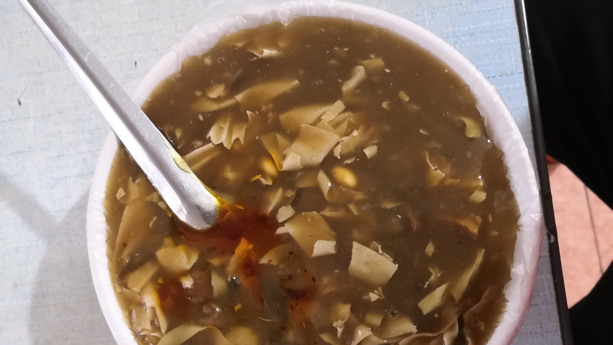
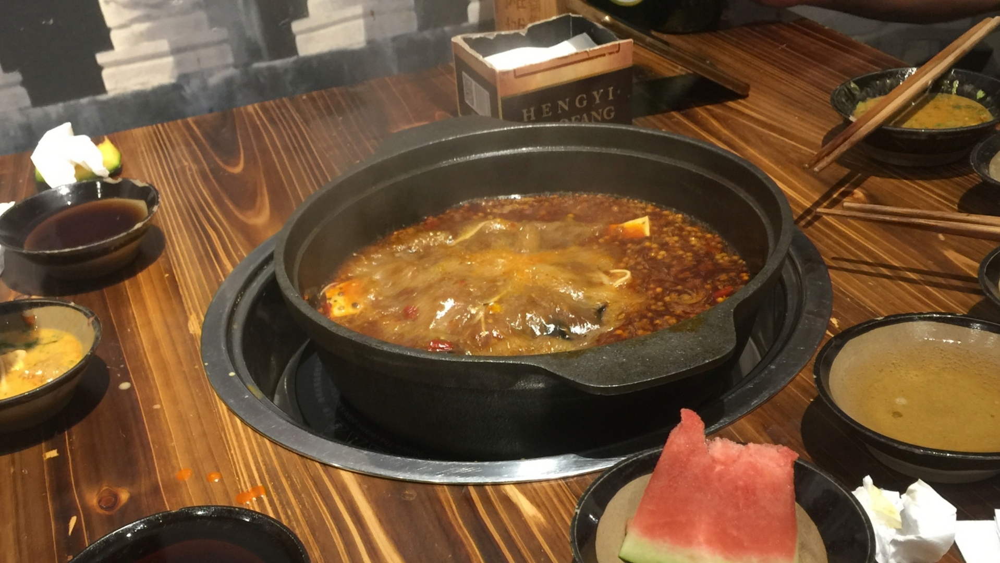

家乡，是我们出生和居住的地方；家乡是我们难以抹去的成长印迹；家乡是我们心灵栖息的归宿。家乡，承载着许许多多鲜活难忘的各类人物，千姿百态的生活方式，丰富深厚的文化记忆……
调查内容
调查结果
1.详细结果
2.筛选结果
2.1调查美食区up主等
(1)烟台焖子

调查对象：江南大学食品研究生
性别：男
记录：烟台特色美食自然属烟台焖子排第一了，在烟台的街头巷尾，你会见到这样的地摊：一个小小的炉灶，一口平底煎锅，几张小饭桌，几只小马扎，便是这个地摊的全部家当;盆里或桶里盛着地瓜淀粉或绿豆淀粉制作的粉块，小桌上摆着几样自制的调料，就是这种小吃的全部原料。这便是烟台著名的小吃烟台焖子。
烟台焖子是山东省烟台市的一道传统小吃，属于鲁菜系，该菜品用粗制地瓜淀粉做原料，将淀粉加水加热打冻，将冻切成小块，用锅煎到外边成焦状颜色由白变透明，并佐以味达美，虾油、芝麻酱、蒜汁等调料上桌即可。
(2)福建锅边


调查对象：b站美食区up主
性别：女
记录：锅边真的是独一无二的味道，哪里都吃不到。
锅边是早餐店都有的，锅边加上油饼和油条，就是一顿早餐。
有很大的锅，先热锅，然后把面糊淋在锅的两边，而不是倒锅里，淋在锅的周围淋一圈，熟了以后刮下来，刮到锅里，再加水和一点点海鲜煮成汤，味道特别鲜美。
图片中碗里的是米皮，不是面，这是南方靠海特有。
海鲜不是特色。
2.2调查网友
(1)菜豆腐

调查对象：网友
性别：男
记录：陕西的一道传统名吃，被评为汉中四大小吃之一
平民小吃
(2)螺狮粉
- 调查对象：网友
- 民族：壮族
- 记录：好吃，酸辣
(3)糍粑
(4)早茶
- 广东人的标识
(5)白切鸡、烧鹅
(6)蒿子粑粑
- 口感比较好，价格亲民，外观新颖
- 中元节时吃
(7)钵钵鸡

- 色香味俱全
(8)光饼
(9)面皮
- 口感不错，价格便宜
(10)沙茶面
- 酱料味道配料多
2.3调查身边的人
(1)烩面

- 八国联军进军北京时，慈禧太后逃到山西避难，仍然牢记用烩面补身驱寒，多次差总管李莲英诏贡山羊做烩面食用，及时解除了寒疾病险。直到清末满汉全席宗师御厨庞恩福因不甘宫廷御膳房苛律束缚，逃出皇宫隐居黄河河南段后，正宗的原阳烩面才传艺民间。
- 抗战时期，日军飞机经常空袭郑州，当时有一位名厨，叫做赵荣光，特别喜欢吃面食。空袭来了，赵师傅就去躲飞机，回来后，就把剩下的面条加点羊肉汤烩烩再吃。久而久之，赵师傅发现重新烩过得面也很好吃，就潜心研究，在里面放些盐和碱，使之更筋。这样做出的面别有一番风味，后来就成了风靡一时的风味美食。
- 河南面食多有所长，烩面是代表之一，此面汉魏时期亦称汤饼，唐以后名称渐变，宋代汴京食店便有“插肉面、大奥面”的供应，后多称羊肉烩面，取其筋软光滑、汤醇性温。
- 烩面是一种荤、素、汤、菜、饭聚而有之的传统风味小吃，以味道鲜美，经济实惠，享誉中原，遍及全国。烩面按配料不同可分为羊肉烩面、牛肉烩面、三鲜烩面、五鲜烩面等。河南烩面所用的面为扯面，类似于拉面，但稍有不同。一般用精白面粉，兑入适量盐碱和成软面，经反复揉搓，使其筋韧。烩面的精华全在于汤，羊肉汤要选用上好鲜羊肉，经反复浸泡后下锅，撇出血沫，放入全大料，将肉煮烂。下面时，锅内放原汁肉汤，将面拉成薄条入锅，放上羊肉，配以黄花菜、木耳、水粉条。上桌时外带香菜、辣椒油、糖蒜等小碟，其味更鲜。因为面香肉烂，味道浓郁，而且价格便宜，它成了中原地带最典型的风味小吃。
(2)胡辣汤

- 精耕细作，是一种大众化，低价位的草根美食
- 早餐必需
- 河南周口胡辣汤——又名糊辣汤，起源于河南省，尤以漯河市舞阳县北舞渡镇胡辣汤以及周口市西华县逍遥镇胡辣汤最为出名。是中国北方早餐中常见的传统汤类名吃。
- 由多种天然中草药按比例配制的汤料，再加入胡椒和辣椒，又用骨头汤做底料的胡辣汤，特点是汤味浓郁、汤色靓丽、汤汁粘稠，香辣可口，十分适合配合其它早点进餐。已经发展成为河南及陕西等周边省份都喜爱和知晓的小吃之一。是中国河南的特色汤类食品，被大家所喜爱，常作为早餐，其特点是麻辣鲜香，营养开胃，适合搭配油条、包子、葱油饼、锅盔，千层饼等面点。
(3)火锅

- 可以和家人朋友一起吃 性价比较高 可以吃的菜品多样
总结
- 各民族饮食多元一体，内陆口味偏辛辣，沿海偏清淡
- 酸甜苦辣咸分布全国，各种饮食融会贯通(如烩面)，但大体为南方水稻(米)，北方小麦(面)
- 大部分家乡特色饮食为家常菜(即每日饮食必需)，少部分为童年回忆(即现在很少吃)
- 大部分家乡特色饮食为粥状(方便食用)